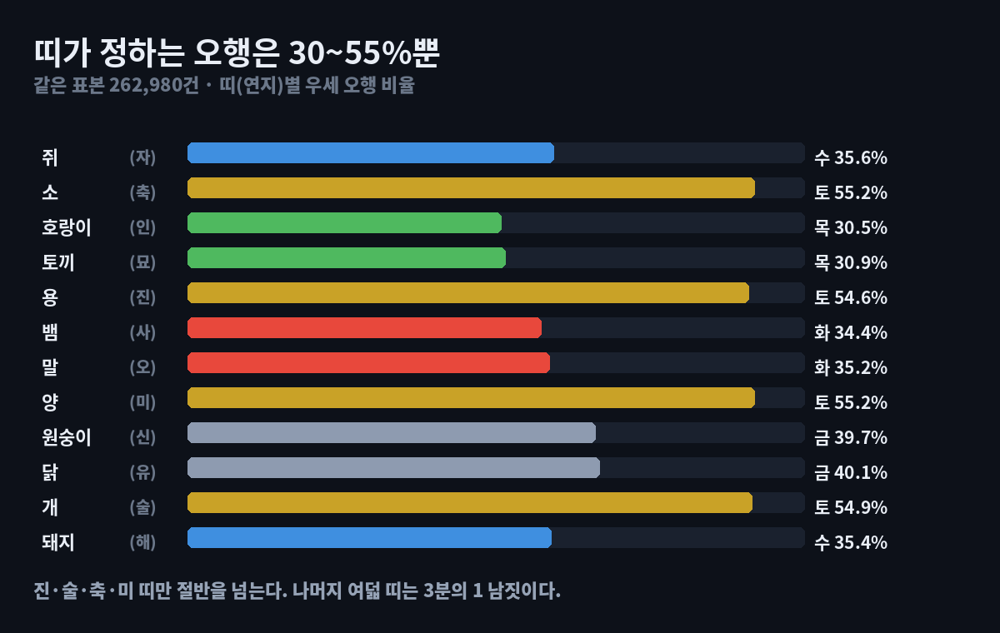

띠별 오행, 26만 건으로 검산했습니다 — 절반은 틀립니다
"호랑이띠는 목(木) 기운이라 추진력이 좋다" 같은 말을 자주 봅니다. 띠는 사주 여덟 글자 중 한 글자입니다. 그 한 글자로 나머지를 얼마나 맞힐 수 있을까요.
세어 봤습니다. 절반도 못 맞히는 띠가 열둘 중 여덟이었습니다.
결론부터
- 띠가 우세 오행을 맞히는 비율은 30.5%~55.2% 사이였습니다.
- 소·용·양·개(축·진·미·술)띠만 절반을 넘겼습니다. 전부 토(土)띠입니다.
- 나머지 여덟 띠는 3분의 1 남짓. 호랑이띠가 목인 비율은 30.5%였습니다.
- 즉 호랑이띠 열 명 중 일곱은 목이 우세 오행이 아닙니다.

어떻게 셌나
앞선 글(가장 흔한 오행은 토 35.9%)과 같은 표본입니다.
- 표본: 1950~2009년생 262,980건 — 60년의 모든 날짜 × 12시진 전수 계산
- 집계: 태어난 해의 지지(= 띠)별로 나눠, 각 띠에서 우세 오행이 무엇인지 셌습니다
- 검증: 겹치지 않는 1890~1949년생 262,968건으로 재계산 — 12띠 모두 우세 오행이 같았고, 비율 차이는 최대 0.3%포인트였습니다
입력값은 브라우저 안에서만 계산되고 어디로도 전송되지 않습니다.
띠별로 보면
| 띠 | 지지 | 우세 오행 | 맞히는 비율 |
|---|---|---|---|
| 소 | 축 | 토 | 55.2% |
| 양 | 미 | 토 | 55.2% |
| 개 | 술 | 토 | 54.9% |
| 용 | 진 | 토 | 54.6% |
| 닭 | 유 | 금 | 40.1% |
| 원숭이 | 신 | 금 | 39.7% |
| 쥐 | 자 | 수 | 35.6% |
| 돼지 | 해 | 수 | 35.4% |
| 말 | 오 | 화 | 35.2% |
| 뱀 | 사 | 화 | 34.4% |
| 토끼 | 묘 | 목 | 30.9% |
| 호랑이 | 인 | 목 | 30.5% |
두 가지가 눈에 띕니다.
첫째, 띠의 오행이 우세 오행이 되는 경향 자체는 있습니다. 호랑이띠에서 가장 많은 건 그래도 목입니다. 띠가 아무 의미가 없다는 말은 아닙니다.
둘째, 그 경향이 생각보다 약합니다. 30%는 "다섯 중 하나(20%)보다 조금 나은" 수준입니다. 띠 하나로 사람을 나누면 열 명 중 일곱은 틀리게 분류됩니다.
왜 토띠만 절반을 넘을까
앞 글에서 짚은 구조가 여기서도 그대로 나옵니다. 십이지 열둘 중 진·술·축·미 넷이 토입니다. 다른 오행의 두 배죠.
그래서 소·용·양·개띠는 자기 띠 글자 말고 다른 칸에서도 토를 만날 확률이 높습니다. 띠가 토인 데다 나머지 일곱 글자에서도 토가 잘 붙으니 55%까지 올라갑니다.
반대로 호랑이띠가 목이려면 연지 하나만으로는 부족하고, 월지나 일지에서도 목을 만나야 합니다. 목은 인·묘 둘뿐이라 그 확률이 낮습니다. 그래서 30%에 머뭅니다.
그래서 띠를 어떻게 봐야 하나
띠는 여덟 칸 중 한 칸입니다. 정확히 8분의 1이죠. 그 한 칸으로 전체를 말하면, 이 표가 보여주듯 절반쯤은 틀립니다.
띠를 재미로 보는 건 얼마든지 좋다고 생각합니다. 다만 "무슨 띠니까 이렇다"를 성격 판단이나 사람 고르는 기준으로 쓰는 건 근거가 약합니다. 같은 호랑이띠라도 태어난 달과 날, 시각에 따라 여덟 글자가 완전히 달라집니다.
같은 이야기를 달로 보면 월별 오행 분포에 있습니다. 월지는 연지보다 오행을 훨씬 크게 움직입니다.
내 띠는 실제로 어땠나
위 계산기에 생년월일을 넣으시면 여덟 칸이 각각 무슨 오행인지 그대로 보입니다. 띠 글자가 어디에 있고, 나머지 일곱 칸이 어느 쪽으로 쏠려 있는지 한눈에 나옵니다.
한계
- 우세 오행은 여덟 글자 중 가장 많은 오행입니다. 동률이면 하나로 정해지지 않습니다.
- 생일이 1년에 고르게 분포한다고 가정했고, 12시진을 같은 비중으로 돌렸습니다.
- 절기 경계는 근사식입니다. 띠는 입춘 기준이라 1~2월생은 해가 바뀌는 지점이 양력 새해와 다릅니다.
- 지장간·왕상휴수는 넣지 않은 단순 글자 수 집계입니다.
재미로 보는 콘텐츠입니다. 이 글의 숫자는 오행 계산의 분포를 말할 뿐, 특정 띠의 성격이나 능력을 말하지 않습니다.